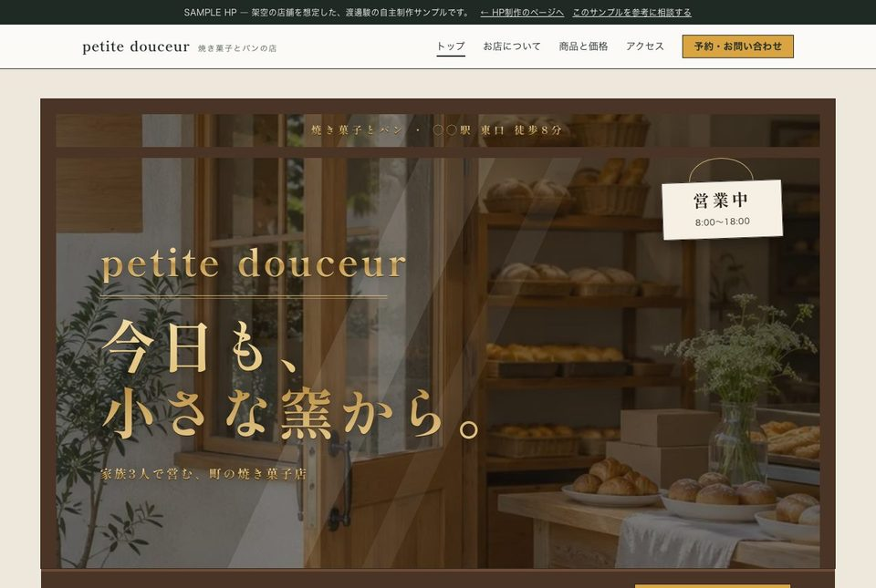
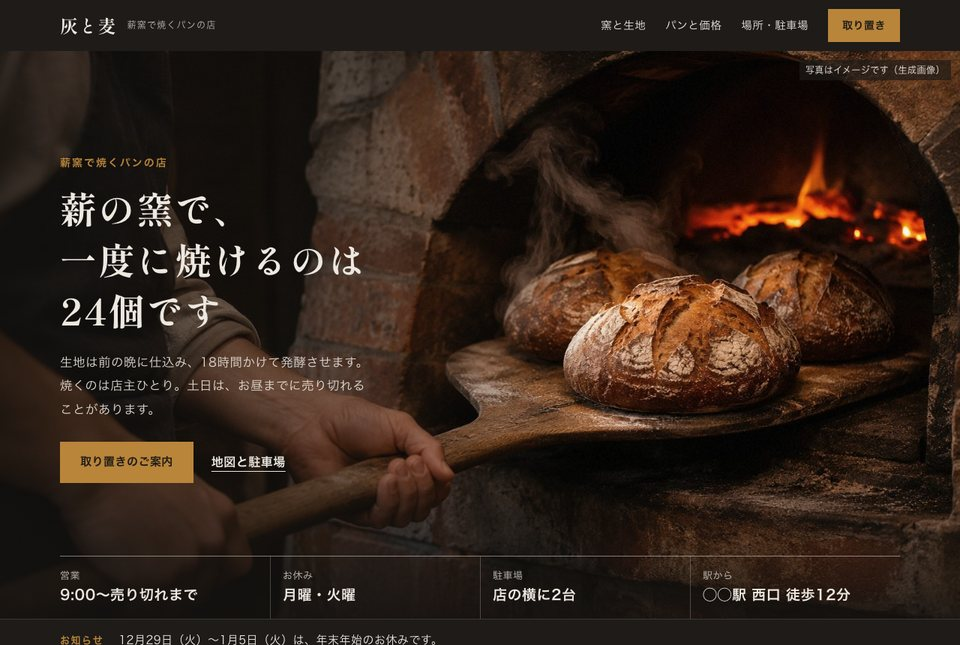
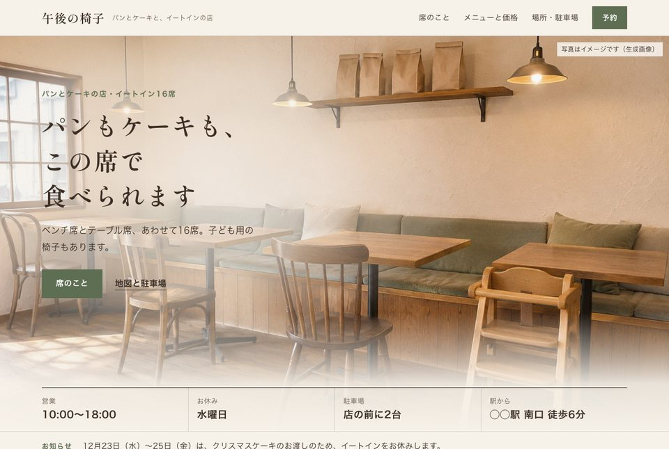
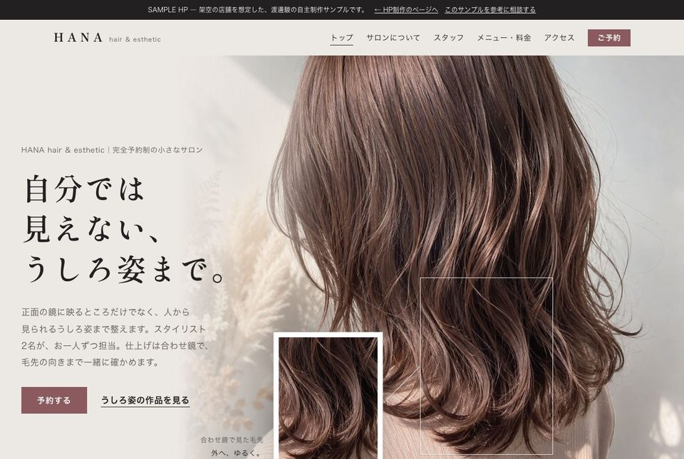
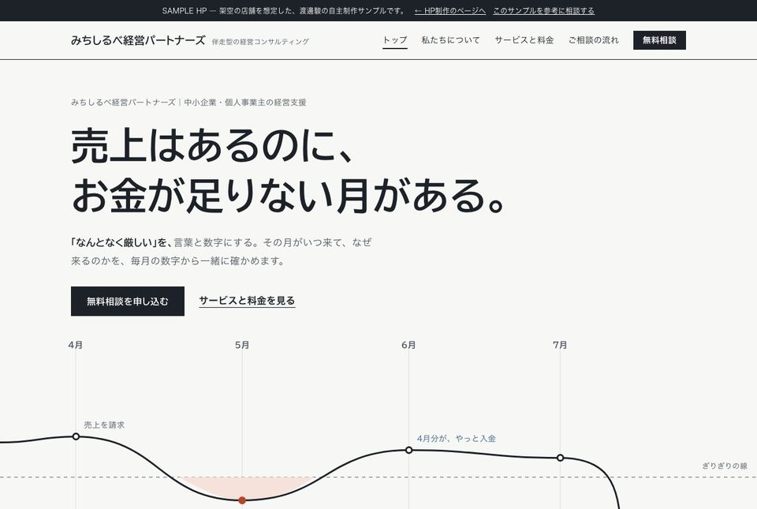
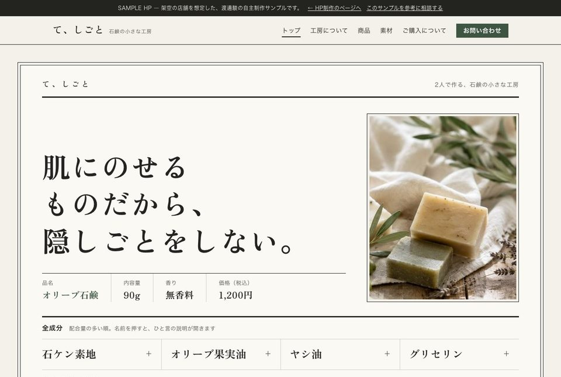

petite douceur
パンが並ぶ商品棚の写真をページいっぱいに使い、写真の値札には名前と値段を手書き風に入れました。店のこだわり、メニュー、お子さま連れへの案内、アクセスの順に並べています。
見本を開く →トップ ／ ホームページ制作
WEBSITE
同じ業種のお店のサイトを調べて、お客様が知りたい項目をそろえ、4〜6ページで作ります。スマホでも読みやすく。
料金の目安（税込・お見積もり無料） 料金の目安と対応範囲
掲載はすべて、架空のお店・事務所を想定した自主制作のサンプルです。お客様からのご依頼による制作実績は、まだありません。

WORKS
どのサイトも4〜6ページ構成で、スマホでも読みやすい作りにしています。載せる項目は、同じ業種のお店のサイトを調べて決めました（スタッフ紹介、駐車場と道順、アレルギー表示、料金の目安、特定商取引法に基づく表記など）。パン屋さんは、店の売り（子ども連れ・焼き方・イートイン）が違う3店を作りました。ご依頼の際は、「このサイトの雰囲気で」とお伝えください。画像をクリックすると、サイトが開きます。
パンが並ぶ商品棚の写真をページいっぱいに使い、写真の値札には名前と値段を手書き風に入れました。店のこだわり、メニュー、お子さま連れへの案内、アクセスの順に並べています。
見本を開く →
薪窯からパンを出す写真の暗い面に見出しを置きました。発酵18時間・窯300℃などの数字で、焼き方へのこだわりを見せます。
見本を開く →
イートインの席の写真から始め、席の数・子ども用の椅子・電源のある席を数字で示しました。
見本を開く →
美容室で最後にする「合わせ鏡」を、ページの仕組みにしました。うしろ姿の写真に手鏡を重ね、毛先の寄りを映します。
見本を開く →
手元のお金の線が画面を横切り、そのまま下へ続いて、お金が足りなくなる理由3つを1本の糸のように貫きます。
見本を開く →
最初の画面全体を、1枚の商品ラベルにしました。全成分を大きく並べ、押すと説明が開きます。
見本を開く →パン屋さんの見本を、ブラウザの中で動く仕組みを入れて作りました。いまの営業状況（営業中・定休日）の自動表示、お知らせの絞り込み、商品の検索と並べ替え、ご予約の合計金額の自動計算、入力チェックと確認画面を試せます。お店の情報は、1つのファイルの文字を直すだけで更新できる作りです。
※ご予約の内容は送信されません（見本です）。実際のお店では、送信先をつなぎます。※すべて架空のお店・事務所を想定した自主制作サンプルです。写真は生成画像によるイメージです。パン屋さんの3店は、店の売りごとに写真から作り分けました。
PROMISE
POINT
PRICE
目安は、小規模なお店・事業者向けのホームページで40,000円〜150,000円前後（税込）です。ページ数や、原稿をご用意いただけるか、文章からお任せいただくかで変わります。内容をうかがってから、無料でお見積もりします。
FLOW
5ページ前後の場合、ヒアリングから納品までおよそ21営業日が目安です（内容によって変わります）。
SEO
ホームページは、「◯◯市 パン屋」のように、地域の名前と業種で探されることが多くあります。お店の名前・住所・営業時間を、どのページでも同じ書き方にそろえることも大事にしています。
Googleの計測ツール「Lighthouse」で、公開中のページを、スマホでの表示を想定して3回ずつ測りました（点数は3回の真ん中の値）。対象はHPサンプル4つ（各トップページ）です。
| 表示の速さ | 97〜100点 |
| 見やすさ・使いやすさ（アクセシビリティ） | すべて100点 |
| 安全で正しい作り（ベストプラクティス） | すべて100点 |
※サンプルは架空のお店なので、検索結果には出さない設定（noindex）にしています。それ以外の設定は、各ページのソースで確かめられます。
FAQ
素材サイトの写真を使って作れます。お店や商品のお写真があれば、雰囲気がいちばん伝わります。AIで作った画像を使う場合は、事前にお伝えしてご相談します。
ページを置く場所（サーバー）と、ページの住所（ドメイン）は、お客様の名義でご用意いただきます。選び方や取り方は、ご説明します。費用はお客様のご負担です。サーバーにサイトを載せて公開する作業は、こちらで行います。
HTMLで作るため、ご自身での文字の差し替えには少しコツが要ります。公開後1か月以内の差し替えは無料、その後は1回3,000円〜でお受けします。ご自身で更新したい場合は、STUDIO・WordPressでの制作をご相談ください。WordPressで制作する場合は、更新のしかたの手順をお渡しします。
Googleマップに載っている情報（営業時間・住所・電話番号など）とホームページの情報にずれがないかを確かめ、直したほうがよい箇所をお伝えします。Googleマップの情報の変更は、お客様のアカウントで行っていただきます。
クラウドワークス経由のご依頼は、クラウドワークスの仮払いの仕組みに沿って進めます。直接のご依頼は、お見積もりのときにご相談して決めます。
構成の整理や下書き、ページを作るコードの作成で、補助として使うことがあります。文章とデザインの仕上げ、表示の確認は、必ず自分の目で行います。
上位表示のお約束はしていません。検索で見つけてもらうための基本の設定をして納品します（SEOの欄をご覧ください）。
CONTACT
ご相談は、こちらからどうぞ。「こんなこと頼めるかな」という段階でも大丈夫です。